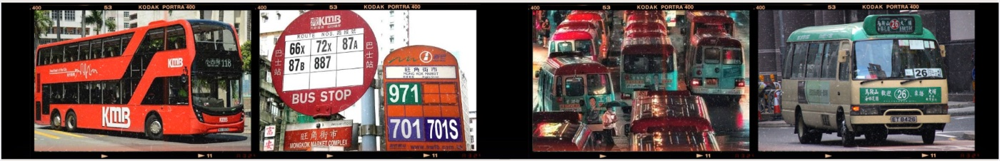

Buses and Minibuses
Extensive franchised bus routes cover remote beaches, mountain trails and residential districts that rails don't reach.
Buses
- Octopus. Regular double-decker buses accept Octopus cards.
- Route displays. Buses feature digital route displays, so you can follow where you are.
- Good for. Beach days, hikes and anywhere the MTR doesn't go.

Minibuses
Green and red minibuses require a bit more local confidence. You often have to shout out your desired stop, in Cantonese or English, before you press the buzzer. It's an authentic rite of passage for new arrivals.
The phrase to learn is “Yau lok, m goi!” It means “I'm getting off, please!” With this, you're all set to enjoy the hectic drive.
- Bring cash. Some minibuses don't take Octopus.
- Hold on. Minibuses move fast, so sit down if you can and hold on.
Night buses
When the MTR stops running for the night, a few overnight bus routes keep going, so you can still get home cheaply after a night out. Night routes come less often than daytime buses, so look up the next departure before you leave, and keep taxi money as a back-up.